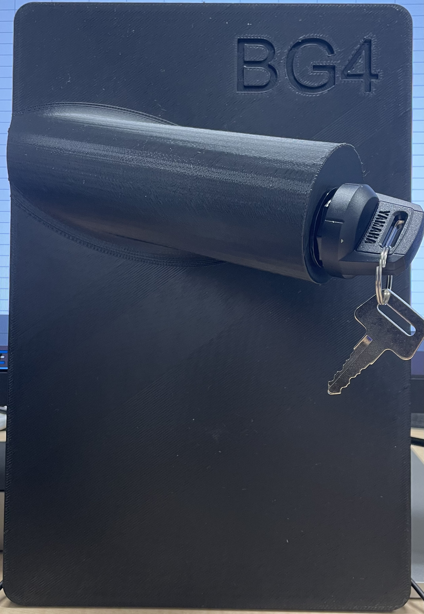
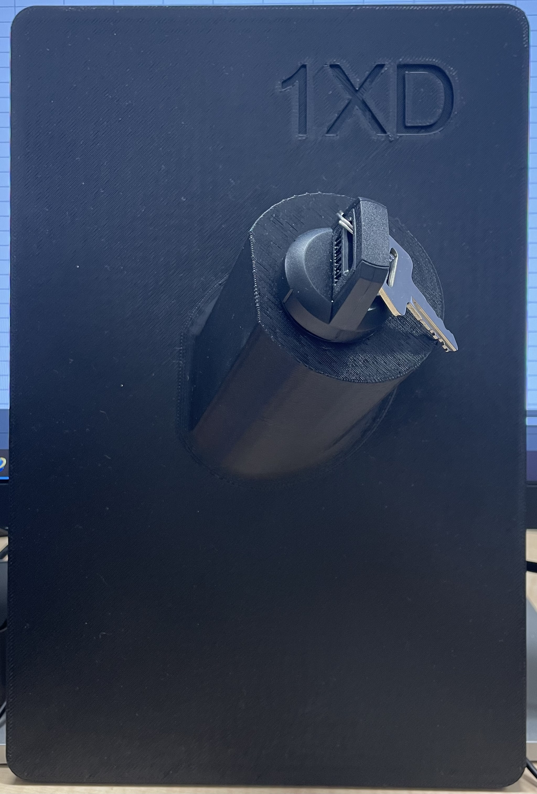
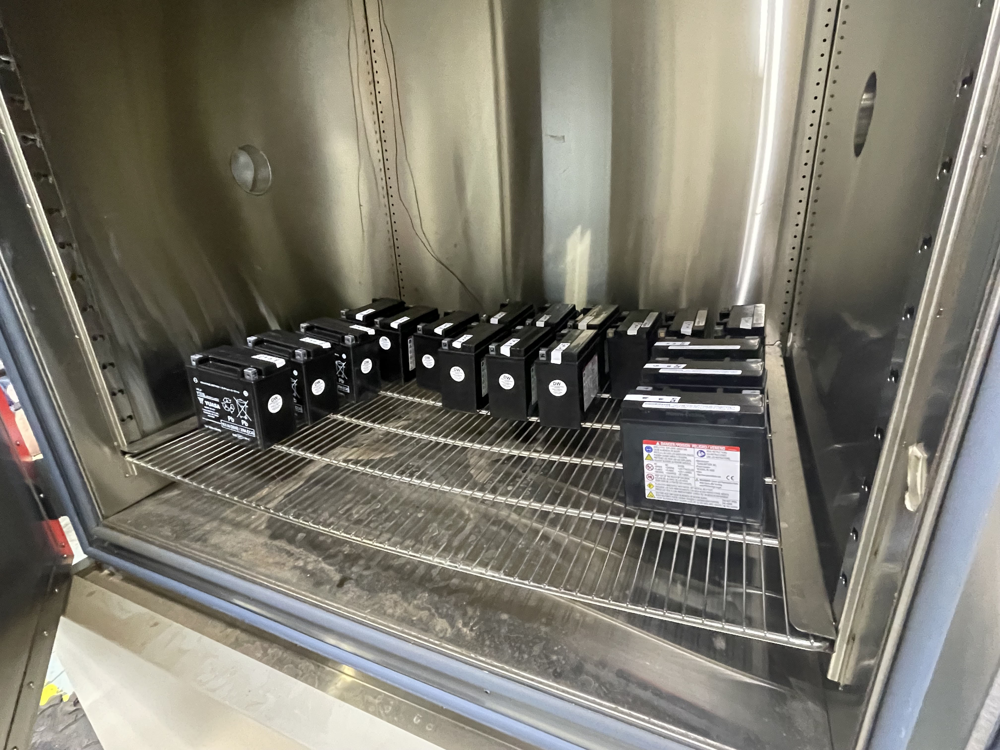
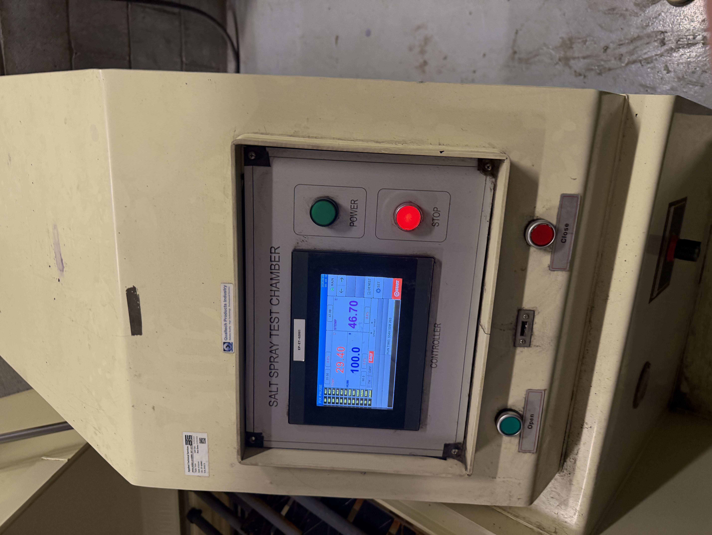
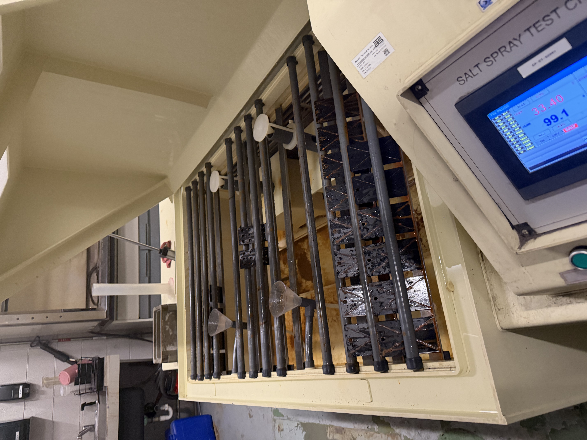
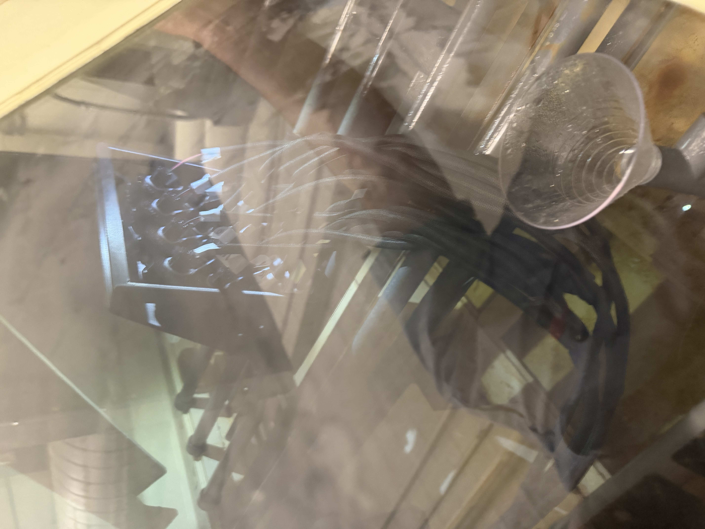

Root Cause: Main Switch and Battery
Role: Mechatronics Engineer Co-op | Organization: Yamaha Motor Manufacturing Corporation of America
Duration: [Add dates]
Project Overview
Investigated two vehicle reliability problems: recurring main-switch warranty failures and battery discharge during warehouse storage. The work combined environmental testing, electrical measurements, failure analysis, and evaluation of practical countermeasures.
Investigation Approach
- Main switch: Corrosion behavior and increasing internal resistance during environmental exposure
- Main switch test setup: 16 switches across four switch types connected to a power supply
- Battery study: Elevated-temperature storage testing with voltage recorded over time
- Equipment: Environmental/oven chamber, multimeter, power supplies, and resistance measurement equipment
My Contributions
- Led environmental reliability testing of vehicle main switches.
- Designed a 16-channel test harness for simultaneous salt-spray testing.
- Analyzed electrical resistance data to investigate corrosion-related failures.
- Evaluated potential countermeasures for both reliability improvement and cost.
- Researched and selected a trickle-charger solution for vehicles stored in warehouses.
- Designed the trickle-charger connection from an engineering drawing and supported component purchasing and documentation release.
Testing & Results
The main-switch study found that proposed countermeasures would substantially increase cost without providing enough quality improvement, making a main-switch redesign the more appropriate long-term solution. The battery investigation supported implementation of a trickle-charger solution for vehicle storage.
Skills & Tools
Reliability testing, electrical resistance measurement, root-cause analysis, test-harness design, multimeters, environmental chambers, power supplies, engineering drawings, data collection.
Gallery & Files






